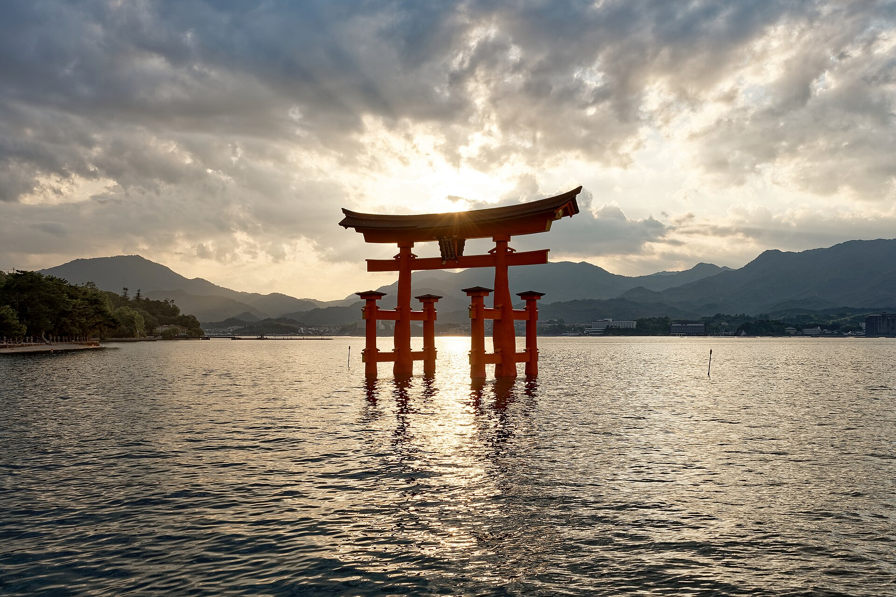

싸다에어
03 / 11
DAY 2
12.01
화요일
미야지마 하루
이쓰쿠시마 신사 · 미센산
08:00
JR로 미야지마구치 이동
09:30
페리 · 이쓰쿠시마 신사
12:30
다이쇼인 산책
14:00
미센산 로프웨이
17:00
석양 후 히로시마 복귀
Photo:
Jakub Hałun · CC BY 4.0
· Wikimedia Commons
다음 날 →
 싸다에어싸다에어
싸다에어싸다에어